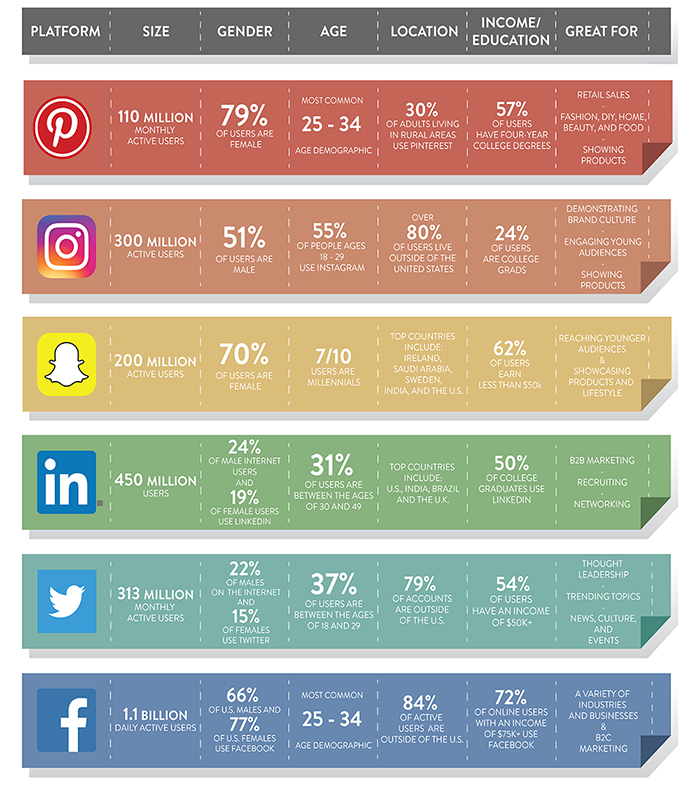
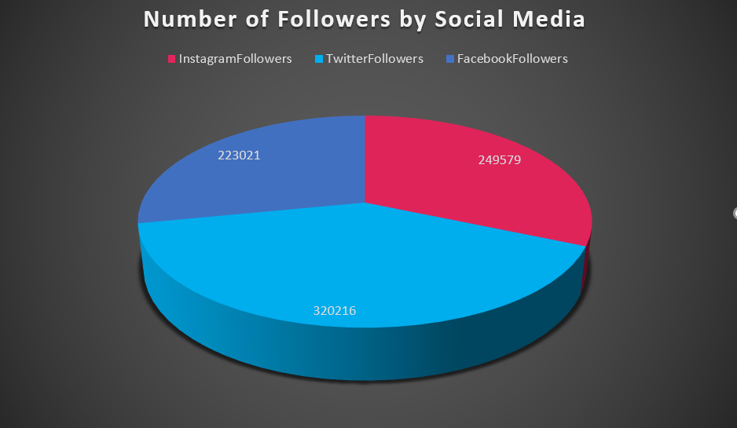
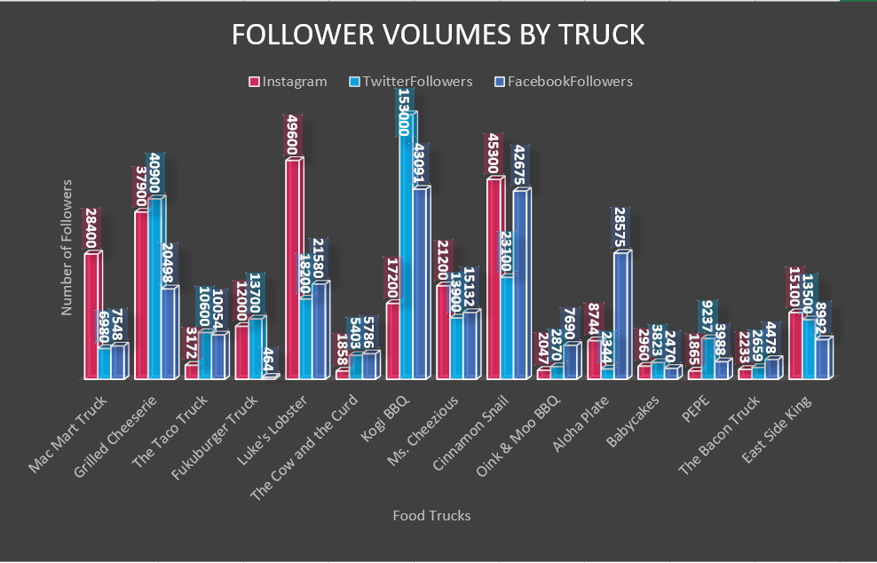
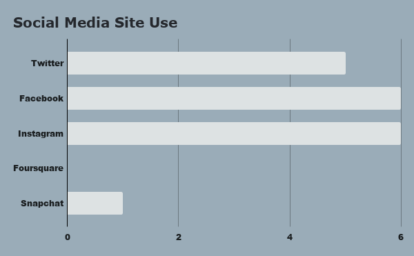
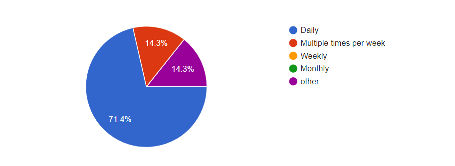
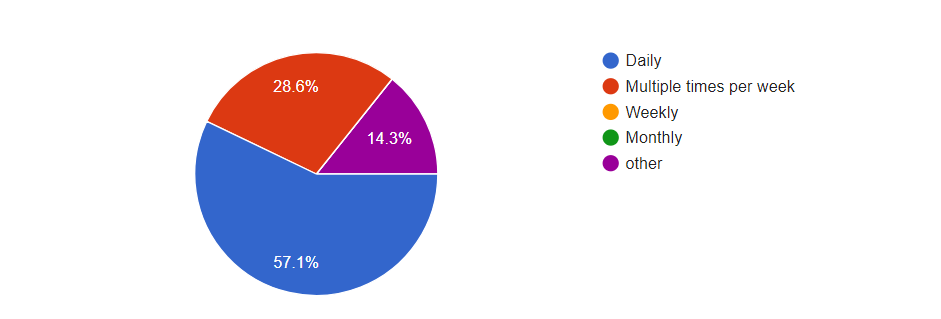
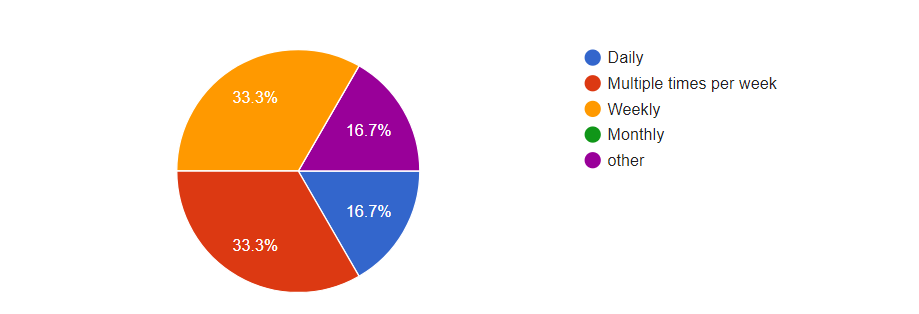
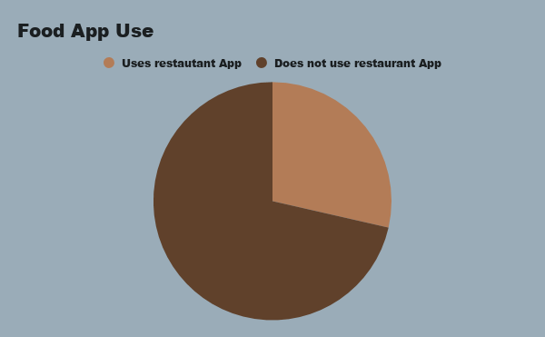

The first infograpic was created using data from Pew Research by socialfactor.com. This infographic shows the demographics and user rates of various social media platforms. It also eplains the possible uses of each platform based on business goals.
We also include visualizations of popular food trucks' social media followings. Through data about the social media presence held by these successful food trucks, we can understand what drives an effective social media strategy.
Finally, we include visualizations of social media use provided by our survey. This includes how many people used which sites and how often as well as whether or not they used food apps.
Marketing Application Infographic
The following infographic is a collection of research from the Pew Research and was shown on socialfactor.com in an article about business marketing through social media platforms.
It shows the demographics of users on varying social media platforms and offers reccomendations for marketing use.

Where are the followers?
This chart shows the sum of followers for each social media website of all food trucks. The distribution of followers is nearly even between Facebook and Instagram but shows higher numbers of followers on Twitter. All of the Food Trucks included in the data have accounts on all three social media sites.

Followers of Each Truck
The following chart shows the distribution of followers for each food truck among the three social media sites listed. For most trucks, it appears that one or two of the three sites contain the largest volume of followers for the food truck. Some of the trucks have had wild success on certain social media while other trucks' follower counts remain in the low thousands for all three social media platforms.

Where are the followers?
This chart shows the sum of followers for each social media website of all food trucks. The distribution of followers is nearly even between Facebook and Instagram but shows higher numbers of followers on Twitter. All of the Food Trucks included in the data have accounts on all three social media sites.
Social Media Use
The following three charts show the responses to a survey where participants were asked which social media websites they use and with what frequency.
Social Medias Used
The following chart shows the survey results for which social medias were used by participants.

Facebook Use

from Google forms
Instagram Use

from Google forms
Twitter Use

from Google forms
Use of Restaurant Apps
This chart shows the percentage of surveyed individuals who currently use other food apps such as the Starbucks app, or the Hooked app.
